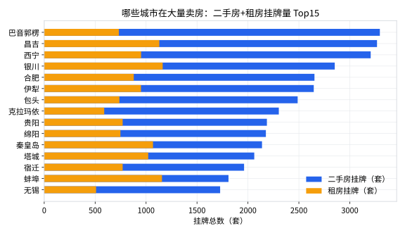

价格是结果，供需是原因。这一课分析两个"量"：每个城市样本内的二手房挂牌量和租房挂牌量，看看卖房和租房这两种行为之间有没有关系。你还会学到比第 4 课更狠的一课：样本偏差如何让一个排行榜完全失去意义。
每一行数据是一个小区，secondhand_count 是这个小区挂着卖的二手房套数。想知道城市层面的量，就把同一城市所有小区的套数加总。新建 step7_supply.py：
import pandas as pd df = pd.read_csv("toy_realestate_sample.csv", encoding="utf-8-sig") df = df.drop_duplicates() df = df[df["synthetic"] == 0] df = df[df["price"].notna() & (df["price"] > 0)] city_supply = ( df.groupby("city") .agg( secondhand=("secondhand_count", "sum"), # 二手挂牌总量 rent=("rent_count", "sum"), # 租房挂牌总量 median_price=("price", "median"), # 顺手带上中位价 ) .reset_index() ) top15 = city_supply.sort_values("secondhand", ascending=False).head(15) print(top15[["city", "secondhand", "rent", "median_price"]].to_string(index=False)) # 卖房和租房，两种挂牌行为相关吗？ print("\n相关系数：", round(city_supply["secondhand"].corr(city_supply["rent"]), 3))
看到巴音郭楞、昌吉、塔城这些名字霸榜，你的常识应该报警了：全国二手房挂牌量最大的城市怎么会是它们？真正的大户（重庆、成都、武汉）去哪了？
原因：这份数据每个城市只抽样了约 80 个小区。把 80 个小区的挂牌数相加，得到的是"样本内总量"，它反映的是这 80 个小区恰好是不是挂牌大户，而不是城市的真实库存。重庆有几万个小区，80 个样本怎么比总量？
结论：这个榜单本身不能用。但它依然教给我们两件事：① 遇到"反常识榜单"，先回头检查统计口径（样本！样本！样本！）；② 有一类数字天生怕抽样——"总量、总和"类指标。而"中位数、比例"类指标（比如中位价）对抽样就稳健得多，这就是为什么本教程的房价分析一直用中位数。
虽然总量排名不可信，"二手挂牌 vs 租房挂牌"的相关系数 0.531却是站得住的信号——因为相关性只看两个量是否同涨同跌，不依赖绝对值：
相关系数范围 -1 ～ +1。0.531 属于中等正相关：一个城市的样本内二手房挂牌越多，租房挂牌也倾向于越多。
为什么？想想第 6 课的思路——背后还是有个更根本的变量在同时驱动两者：城市体量。城市越大、人口流动越活跃，买卖和租赁两个市场就都越大。它俩是"同一枚硬币的两面"，而不是谁导致谁。
如果算出来接近 0，说明买卖和租赁互不相干；如果接近 -1，说明一个市场热另一个就冷（比如"卖不动改出租"）。0.53 告诉我们：中国楼市里，卖和租基本是同冷同热的。
import matplotlib.pyplot as plt plt.rcParams["font.sans-serif"] = ["Microsoft YaHei", "PingFang SC", "SimHei"] plt.rcParams["axes.unicode_minus"] = False top = city_supply.sort_values("secondhand", ascending=False).head(15).iloc[::-1] fig, ax = plt.subplots(figsize=(8, 4.6)) # 同一批城市画两遍：先画长的二手柱，再叠一层短的租房柱 ax.barh(top["city"], top["secondhand"], color="#2563eb", label="二手房挂牌（套）") ax.barh(top["city"], top["rent"], color="#f59e0b", label="租房挂牌（套）") ax.set_xlabel("样本内挂牌总数（套）") ax.set_title("各城市样本内挂牌量 Top15（注意：非全城总量）") ax.legend(loc="lower right") plt.tight_layout() plt.savefig("supply_top15.png", dpi=150) plt.show()

从图上还能直观看一个"租售结构"：昌吉、蚌埠、秦皇岛的橙色柱相对更长（租房挂牌约占二手的 35–60%），而克拉玛依、无锡的橙色柱很短（不到 30%）——租赁市场的相对厚度，城市之间差异很大。
rent / secondhand（租售比），看看排名前 5 的城市。先猜一猜会不会又撞上"小样本陷阱"？（提示：有些城市 secondhand=0，除法会得到无穷大，注意过滤）median_price 和 secondhand 算相关系数：挂牌多的城市更便宜还是更贵？# 练习1：
valid = city_supply[city_supply["secondhand"] > 0].copy()
valid["rent_ratio"] = valid["rent"] / valid["secondhand"]
print(valid.sort_values("rent_ratio", ascending=False).head(5)[["city", "rent_ratio"]])
# 果然全是小样本城市（山南 n=69 样本、rent_ratio=77；阿勒泰 28.7…）
# 又一次验证：极端排名的常客都是 n 小的行。
# 练习2：
print(city_supply["median_price"].corr(city_supply["secondhand"])) # 约 -0.1 左右，弱负
# 挂牌多（样本内）的城市房价略低，但很弱，参考意义有限。
# 练习3：全量抓取才能算总量；抽样只能稳妥地估中位数/比例。
# 这就是统计里的老话：抽样估"平均"，全量算"总量"。